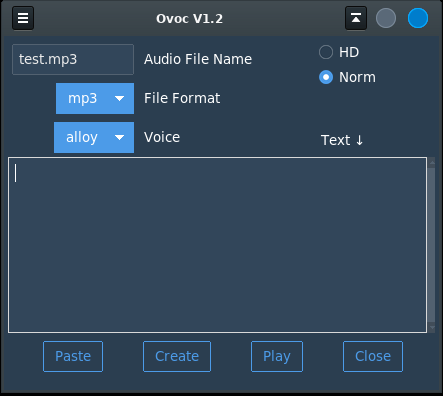

Ovoc uses the OpenAI audio.speech API with several speech parameters to convert text into speech in the form of an audio file. The quality of the speech produced is more lifelike than that of previous text-to-speech technologies.
Explanation of the API parameters

$ python3 ovoc.py
OpenAI Key
configured in your OS environment asGPTKEY.
On Linux:
The program utility 'play' (SoX) plays back the audio file.
On Windows:
Please install VideoLAN's VLC media player.
A preferable method for playback would be to open a file manager in the `.../ovoc/files
directory and double-click on the various audio files you've created. This will
invoke your system's audio player and allow greater control over playback.